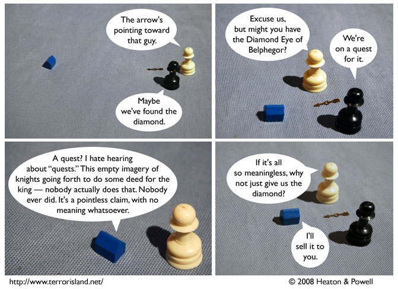

Strip #325
— Wednesday, July 9, 2008
Man, you really shouldn’t get Helmut started on quests.
Notes, Thoughts, &c.
Ben’s Notes
I just saw an article speculating that Dominica might be the next Terror Island. Well, Lewis and I had a good run.
Lewis’s Notes
Ben, I think there’s enough room in the modern world for more than one Terror Island.
I wrote Lewis’s comments today. -Ben